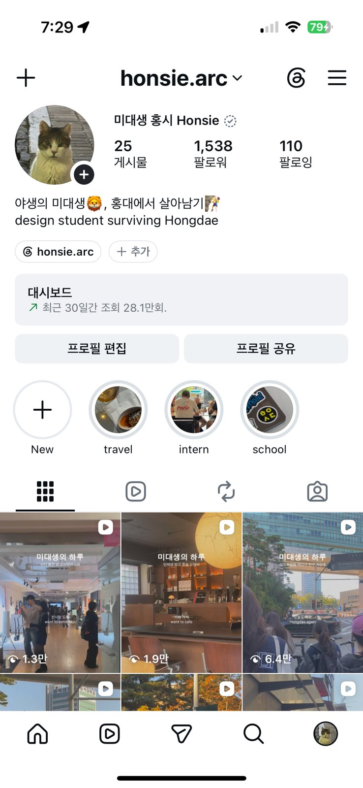
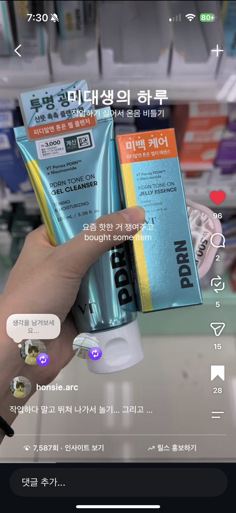
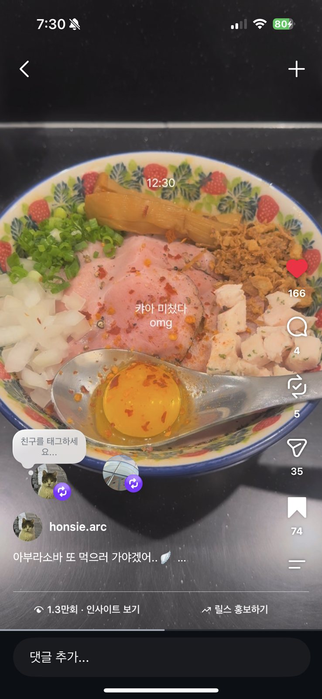
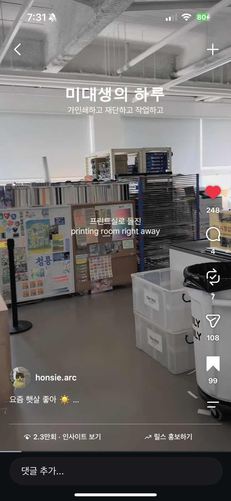

저는 사람을 이해하는 일에 큰 흥미를 느낍니다. 시각디자인을 전공하며 사람이 화면에서 어떻게 느끼고 움직이는지를 살피는 일에서 출발했고, 그 호기심이 사용자와 크리에이터의 반응을 지표로 확인하고 성장 구조로 옮기고 싶은 마음으로 이어졌습니다.소개 문단 수정안, 확인 필요
퍼포먼스 마케팅 인턴, 프로덕트 디자이너, 그로스매니저 인턴을 거치며 광고 소재, 숏폼, 챌린지 서비스, AI 기능처럼 대상을 바꿔 가며 사용자가 멈추는 지점을 지표와 인터뷰로 함께 읽어 왔습니다. 인턴, 동아리, 창업팀에서 팀원부터 팀리더까지 경험하며 쌓은 추진력과, 여러 사람을 아우르는 소통을 장점으로 꼽습니다.
저 자신도 콘텐츠를 만드는 사람입니다. 쉬는 날에는 미대생의 일상을 담은 브이로그 릴스를 올리며 홍대 맛집과 카페를 소개합니다. '1만원 홍대맛집' 릴스는 조회수 72만 회를 넘겼고, 사람들은 새로운 자극보다 믿고 고를 수 있는 것에 반응한다는 점을 알게 됐습니다.
구직자 인터뷰 숏폼, 부업 크리에이터를 위한 창작툴, 결제 전환을 만든 챌린지 서비스처럼 콘텐츠를 만드는 사람의 입장과 보는 사람의 반응을 함께 설계해 온 경험으로, 크리에이터가 성장하는 구조를 만들고 수익화 기회를 발굴하는 일에 기여하겠습니다. 클래스101에서 함께 성장하고 싶습니다.
kayjung.dsgn@gmail.com
LinkedIn
미대생이라는 키워드를 중심으로 일상을 담고, 홍대 맛집과 카페를 추천하며 쓸 만한 뷰티 제품도 소개합니다. '1만원 홍대맛집' 릴스는 조회수 72만 회를 넘기며 팔로워가 37% 늘었습니다.




지원서 사진 미등록 문제 개선, 시즈널 마스터 캠페인, 구직자 신뢰 콘텐츠 제작
기업용 디지털 명함 서비스 온보딩 개선, 화면 설계, 고객사 미팅
HR SaaS 조직문화 관리 앱의 사내 직원 매칭 문제 해결, B2B 수익화
습관 형성 챌린지 서비스 0→1 운영, 앱 런칭 후 프로모션과 홍보 소재 제작
메타 광고 운영, 카카오 비즈보드 문구 관리, 주간 소재 성과 리포트와 데일리 검색어 리포트 제작
디자인 플랫폼팀에서 디자인 시스템 용량 최적화와 관리·운영
모임 의견 수렴과 맛집 추천 서비스 기획과 팀 리딩
기능 정의서 작성, 디자인 시스템 제공
기획, 런칭, 온보딩 개선
프로덕트 디자인, 창업경진대회 Grade A
기계공학과 산업디자인 전공자와 협업해 미래 달 모빌리티 설계
비건 콜라보 스토리 공유 이벤트 기획 참여
부업 크리에이터를 위한 AI 텍스트 콘텐츠 창작 툴
서비스를 기획하고 팀을 이끌었습니다.
프로덕트 디자인과 운영을 맡았습니다.
브랜드 프로모션 기획과 서비스 기획 제안
UX/UI 세션 기획·진행과 후배 멘토링, 인터랙션 작업
학교생활 간행물 제작, 디자인 강연 기획과 연사 섭외, 홍보물 제작
행사 기획과 브랜드 가이드북 제작
발표 후 참가자 투표 방식의 평가에서 현직자들 사이의 유일한 학생으로 선정되었습니다.
런칭 2주 만에 약 800명 유저를 확보하며 트렌딩 프로덕트 1위에 올랐습니다.
지구의 생체리듬을 재현하는 미래 달 도시 시스템 제안이 전 세계 부문 1위로 평가받았습니다.
먹BTI 기반 취향 큐레이션 서비스가 창업 아이템으로 높은 평가를 받았습니다.